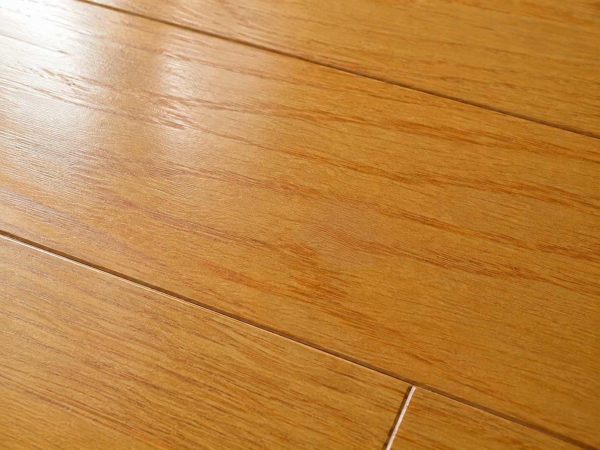

小さなキズ1箇所から対応。交換せずに補修で美観を回復します。
管理会社・工務店・不動産会社・個人宅の発注に対応しています。

フローリングのキズ、建具の欠け、サッシの傷、コンクリートのひび—— これらを「交換」ではなく「補修」で対応します。
退去後の原状回復、入居前の美装、工事後の仕上げキズ対応など、 幅広い場面でご活用いただいています。
補修内容・箇所数・現場状況により変動する場合があります。詳細は現地確認後にご提示します。
| 区分 | 料金（税込） | 目安 |
|---|---|---|
| 小傷・1箇所補修 | ¥11,000〜 | フローリング1ヶ所、サッシ枠1本など |
| まとめ補修（半日） | ¥18,000〜 | 複数箇所をまとめて施工（〜4時間目安） |
| まとめ補修（1日） | ¥33,000〜 | 1部屋〜複数部屋の集中補修（〜8時間目安） |
| 出張費（往復50kmまで） | 無料 | |
| 出張費（51〜70km） | ¥3,000 | |
| 出張費（70km超） | ¥3,000＋1kmにつき¥300 |
※ 価格はすべて税込です。
※ 難易度の高い素材・特殊加工・大面積の場合は別途見積もりとなります。
※ 有機溶剤不使用の材料を使用する場合、材料費が追加になることがあります。
Free Consultation
現地を見てから判断します。「これは補修できる？」という確認だけでも大歓迎です。
相談・現地確認・見積もりは無料です。